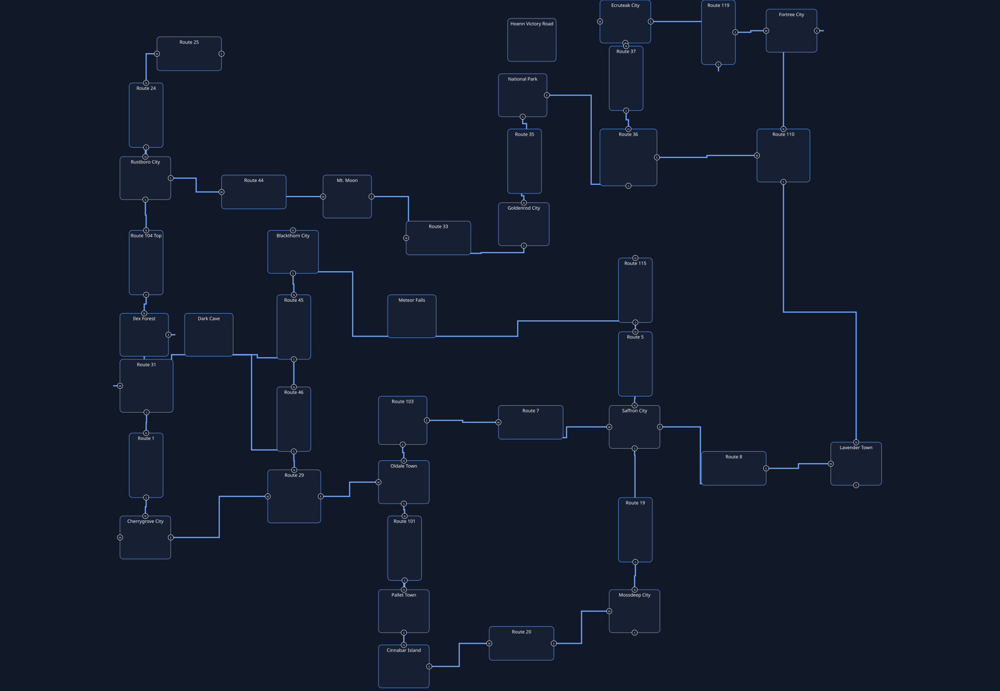

Design navigation
Plastic Ox region map
Every location in the storyline, in order. Click a stop to inspect it,
or follow the route with Previous and Next .
Key NPCs are separated from the people who only talk.
40 main-line stops21 supporting / audit notes330 key NPCs300 standard NPCsOpen the physical design SVG
Physical design map (SVG)
The older v0.6.1 layout sketch, kept as a geography view. It is not a
verified progression graph; the clickable storyline map below is current.

Storyline map
The map is a scrollable pane; the selected stop stays in view.
All stops
This map needs JavaScript. The same locations are listed here in story order.
Pallet Town — Act 1 · 0 — Opening · 6 key NPCsRoute 101 — Act 1 · 0 — Opening network · 0 key NPCsOldale Town — Act 1 · 0 — Opening network · 4 key NPCsRoute 29 — Act 1 · 0 — Opening network · 4 key NPCsRoute 46 — Act 1 · 0 — Opening network · 2 key NPCsDark Cave South Side — Act 1 · 0 — Opening network · 1 key NPCsRoute 30 — Act 1 · 0 — Opening network · 0 key NPCsRoute 31 — Act 1 · 0 — Opening network · 1 key NPCsRoute 2 — Act 1 · 0 — Opening network · 3 key NPCsRoute 2 — Act 1 · 0 — Opening network · 0 key NPCsCherrygrove City — Act 1 · 0 — Opening network · 2 key NPCsIlex Forest — Act 1 · 0 — Opening network · 5 key NPCsRustboro City — Act 1 · 1 — Rustboro and the early Cottage branch · 7 key NPCsRoute 3 — Act 1 · 1 — Rustboro and Sea Cottage · 0 key NPCsRoute 4 — Act 1 · 1 — Rustboro and Sea Cottage · 0 key NPCsRoute 14 — Act 1 · 1 — Rustboro and Sea Cottage · 0 key NPCsRoute 24 — Act 1 · 1 — Rustboro and Sea Cottage · 1 key NPCsRoute 25 — Act 1 · 1 — Rustboro and Sea Cottage · 10 key NPCsRoute 34 — Act 1 · 1 — Rustboro and Sea Cottage · 0 key NPCsRoute 44 — Act 1 · 2 — Mt. Moon · 8 key NPCsMt Moon Cave — Act 1 · 2 — Mt. Moon · 5 key NPCsRoute 33 — Act 1 · 2 — Mt. Moon · 1 key NPCsGoldenrod City — Act 1 · 3 — Goldenrod · 9 key NPCsGoldenrod City Department Store 7F — Act 1 · 3 — Goldenrod · 0 key NPCsGoldenrod City Department Store 7FNight — Act 1 · 3 — Goldenrod · 0 key NPCsRoute 35 — Act 1 · 3 — Goldenrod to Ecruteak · 2 key NPCsNational Park Normal — Act 1 · 3 — Goldenrod to Ecruteak · 12 key NPCsRoute 36 — Act 1 · 3 — Goldenrod to Ecruteak · 4 key NPCsRoute 37 — Act 1 · 3 — Goldenrod to Ecruteak · 3 key NPCsEcruteak City — Act 2 · 4 — Ecruteak and the Burned Tower · 16 key NPCsBurned Tower — Act 2 · 4 — Ecruteak and the Burned Tower · 0 key NPCsBurned Tower B1F — Act 2 · 4 — Ecruteak and the Burned Tower · 3 key NPCsRoute 38 — Act 2 · 4 — Ecruteak and the Burned Tower · 0 key NPCsRoute 119 — Act 2 · 5 — Route 119 and Fortree · 33 key NPCsFortree City — Act 2 · 5 — Route 119 and Fortree · 12 key NPCsRoute 110 — Act 2 · 6 — Fortree to Lavender · 14 key NPCsRoute 16 — Act 3 · 6 — Fortree to Lavender · 0 key NPCsLavender Town — Act 3 · 9 — Lavender / Team Rocket II · 10 key NPCsRoute 8 — Act 3 · 8 — Underground bypass · 13 key NPCsRoute 7 — Act 3 · 8 — Underground bypass · 0 key NPCsRoute 103 — Act 3 · 8 — Underground bypass · 11 key NPCsRoute 12 — Act 3 · 8 — Underground bypass · 0 key NPCsCinnabar Island — Act 3 · 9 — Cinnabar and the Mansion · 17 key NPCsRoute 20West — Act 3 · 9 — Cinnabar and the Mansion · 0 key NPCsRoute 21 North — Act 3 · 9 — Cinnabar and the Mansion · 5 key NPCsRoute 21 South — Act 3 · 9 — Cinnabar and the Mansion · 5 key NPCsRoute 21 — Act 3 · 9 — Cinnabar and the Mansion · 0 key NPCsRoute 20East — Act 3 · 10 — Seafoam passage · 0 key NPCsMossdeep City — Act 3 · 11 — Mossdeep and the Space Center · 31 key NPCsSaffron City — Act 4 · 10 — Saffron hub · 15 key NPCsRoute 19 — Act 4 · 10 — Saffron hub · 12 key NPCsRoute 6 — Act 4 · 10 — Saffron hub · 0 key NPCsRoute 5 — Act 4 · 12 — Saffron to Blackthorn · 0 key NPCsRoute 115 — Act 5 · 13 — Meteor Falls · 10 key NPCsMeteor Falls 1F 1R — Act 5 · 13 — Meteor Falls · 4 key NPCsRoute 45 — Act 5 · 14 — Blackthorn and Clair · 8 key NPCsBlackthorn City — Act 5 · 14 — Blackthorn and Clair · 3 key NPCsVictory Road — Act 5 · 15 — Victory Road · 7 key NPCsIndigo Plateau — Act 5 · 16 — Pokémon League · 6 key NPCsBattle Frontier Outside West — Act 6 · Postgame — Battle Frontier · 3 key NPCsWhirl Islands — Act 6 · Postgame — legacy dungeon · 2 key NPCs